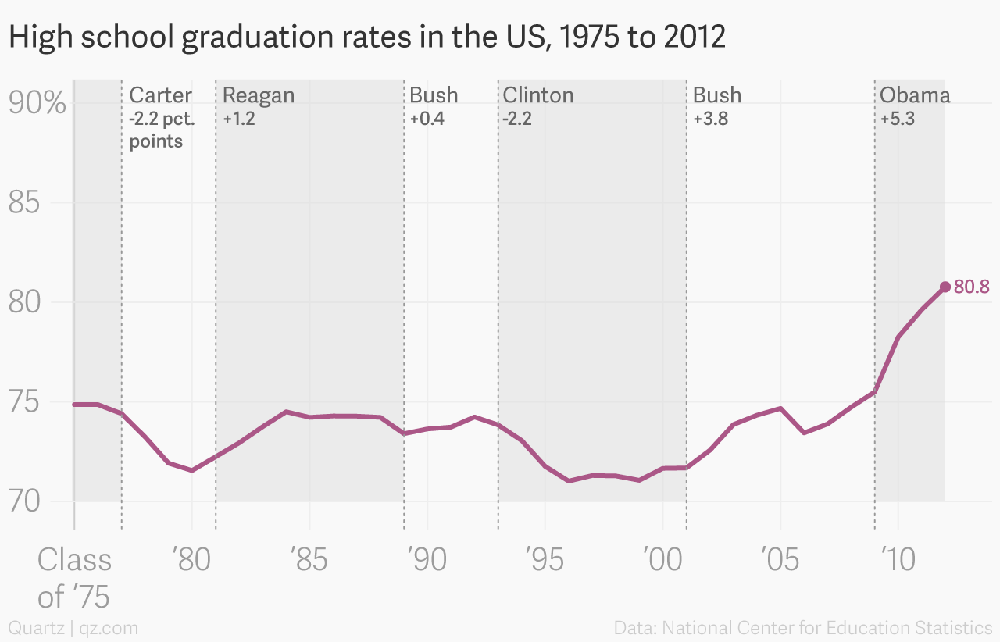

<!DOCTYPE html>
<!-- paulirish.com/2008/conditional-stylesheets-vs-css-hacks-answer-neither/ -->
<!--[if lt IE 7 ]> <html class="ie6" lang="en"> <![endif]-->
<!--[if IE 7 ]>    <html class="ie7" lang="en"> <![endif]-->
<!--[if IE 8 ]>    <html class="lt-ie9" lang="en"> <![endif]-->
<!--[if IE 9 ]>    <html class="lt-ie10" lang="en"> <![endif]-->
<!--[if (gte IE 9)|!(IE)]><!--> <html lang="en"> <!--<![endif]-->
<head>
  <meta charset="utf-8" />
  <meta name="viewport" content="width=device-width, initial-scale=1.0" />
  <title>twentytwenty</title>
  <link href="css/foundation.css" rel="stylesheet" type="text/css" />
  <link href="css/twentytwenty.css" rel="stylesheet" type="text/css" />
</head>
  <body>

    <div class="row" style="margin-top: 2em;">
      <div class="large-4 columns">
       
      </div>
      <div class="large-8 columns">
        <div class="twentytwenty-container">
          
          
        </div>
      </div>
    </div>
    


    
    <script src="//ajax.googleapis.com/ajax/libs/jquery/1.10.1/jquery.min.js"></script>
    <script src="js/jquery.event.move.js"></script>
    <script src="js/jquery.twentytwenty.js"></script>
    <script>
    $(window).load(function(){
      $(".twentytwenty-container[data-orientation!='vertical']").twentytwenty({default_offset_pct: 0.7});
      $(".twentytwenty-container[data-orientation='vertical']").twentytwenty({default_offset_pct: 0.3, orientation: 'vertical'});
    });
    </script>
  </body>
</html>


<font size="6">High School graduation rate misguided by the White House<font size="6">
<p>
<font size="3">
<b>A twitter posted by the White House used an infographics to congratulate the highest graduation rate the Obama Government has achieved.<b>
  </font>
  
  
<blockquote class="twitter-tweet" data-lang="zh-tw"><p lang="en" dir="ltr">Good news: America&#39;s high school graduation rate has increased to an all-time high.🎓 <a href="https://t.co/Ih564hAo2u">https://t.co/Ih564hAo2u</a> <a href="https://t.co/C4h5JdIvwQ">pic.twitter.com/C4h5JdIvwQ</a></p>&mdash; White House Archived (@ObamaWhiteHouse) <a href="https://twitter.com/ObamaWhiteHouse/status/677189256834609152">2015年12月16日</a></blockquote>
<script async src="//platform.twitter.com/widgets.js" charset="utf-8"></script>
  
  <p>
    
  <font size="3">
Does this look impressive to you? This is always a good idea to use inforgraphics to vivdly describe the situations. However, does this look odd to you? How can does 5 books represent 75% while 16 books represent 82%? If we change the data to a bar chart, 
  </font>

    
 <iframe width="600" height="370.5" seamless frameborder="0" scrolling="no" src="https://docs.google.com/spreadsheets/d/1Mf0IUGQhj1BwMe9YjEd8iwE-V4nNZd6hiikWRON5aF0/pubchart?oid=1213794774&amp;format=interactive"></iframe>
  
   <p>
  <font size="3">
   <p>    
As you can see, the increase isn't that significant. The difference is because the bar chart aboves starts from 0% while the infographics only show the upper part of the bar chart which doesn't start from zero.
<p>    
Let's do something more. According to the twitter, the statistices came from the National Centers for Education Statistics (NCES) at the US Department of Education (DOE). They might have provide statistics from earlier. Here is the statistics for the high school graduatoin in the US from 1975 to 2012.

     <p>
  

       <p>
    
There are a few things we can get out of this larger context. One is that graduation rates were already trending upward when Barack Obama became president. Another is that, as of 2012, the percentage point increase in graduation rates was higher under Obama than any previous president. And if the 2014 graduation rate was 82%, as the White House chart shows, that increase is actually closer to seven points.

 
  </font>
    
